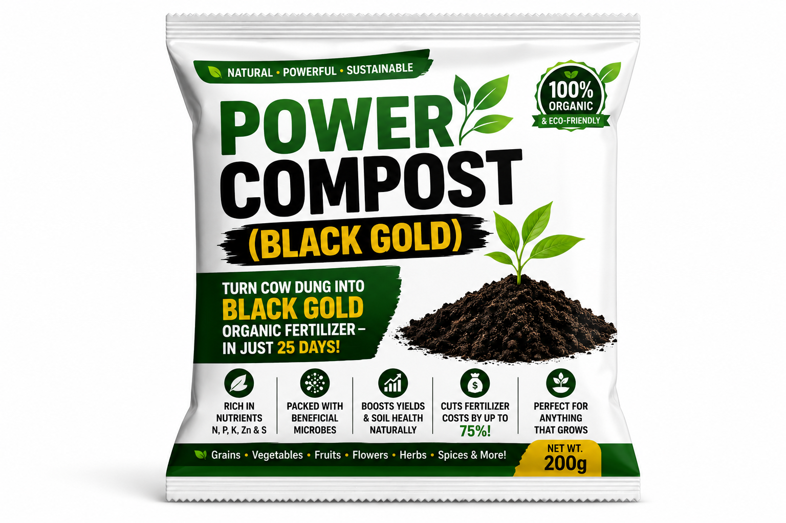

🌾 Black Gold Power Compost
Solid cow dung transformed into premium bio-enriched compost. A scientifically enhanced soil regenerative solution that boosts crop productivity, restores degraded soils, and reduces dependency on chemical fertilizers.
- 35-day advanced microbial technology production process
- Scientifically proven 15-45% yield increase across all soil types and climates
- 100% natural: no chemicals, no toxins, safe for farmers, families and the environment
- Reduces chemical fertilizer dependency by up to 60%
- Universal application for cereals, legumes, vegetables, fruits and trees
- Backed by research from FAO, ICAR, IISS and peer-reviewed studies (2019-2024)
Order Black Gold
Enter your name and phone number. Our team will call to confirm quantity and delivery.

Not just compost. A bio-engineered solution.
Designed for maximum impact on every soil type, in every climatic zone across Kenya and beyond.
Rapid Production
Advanced microbial technology transforms cow dung into premium compost in just 35 days.
Yield Increase
Scientifically proven to boost crop productivity across all soil types and climates.
Natural & Safe
No chemicals, no toxins. Safe for farmers, families, food consumers and the environment.
The science that powers soil fertility.
Each batch contains powerful consortia of beneficial microorganisms that enhance soil nutrient cycling, backed by research from FAO, ICAR, IISS and peer-reviewed studies (2019-2024).
Simple application. Extraordinary results.
Works for all crops, all soil types, and all climatic zones. No heavy machinery needed.
Step 1: Broadcasting
Apply 1-2 tons per acre as a general field application. Spread evenly across the entire field before any cultivation.
Step 2: Basal Application
Apply 500-1,000 kg/acre. Mix directly into the topsoil before planting to establish a strong nutrient base for your crop.
Step 3: Planting
For planting holes, mix 1 part Black Gold with 2 parts soil. Use 200-300g per hole for annual crops and 1-2 kg for perennials.
Step 4: Top Dressing
Apply 200-400 kg/acre at the mid-growth stage. Feeds the crop through its most critical development period.
Crop-specific rates for maximum performance.
Cereal Crops
Maize, Sorghum, Millet, Wheat
- Better root structure
- Improved drought tolerance
- Higher grain filling
- Increased tillering
Legumes
Beans, Groundnuts, Cowpeas
- Better nodulation
- Increased nitrogen fixation
- Higher pod formation
- Improved grain quality
Vegetables
Tomatoes, Sukuma, Cabbage, Onions
- Faster growth
- Better leaf development
- Higher yields
- Improved quality
Fruit Trees
Banana, Mango, Citrus, Avocado
- Stronger growth
- Better fruiting
- Improved fruit quality
- Longer productive life
Nursery Beds
Trays, bags, raised beds
- Stronger seedlings
- Better germination rates
- Vigorous early growth
Kitchen Gardens
Excellent for leafy vegetables
- Excellent for leafy vegetables
- Consistent results
- Easy home application
Black Gold is highly versatile. Use more in poor soils and less in fertile soils. Safe for continuous use with no risk of over-application.
Why Black Gold outperforms ordinary compost.
A bio-enriched, nutrient-optimized, microbially active soil solution designed for maximum productivity at minimum cost.
Faster and Healthier Seed Germination
12-35% improvementThe microbial richness of Black Gold boosts early seed vigor and root initiation.
- Faster emergence
- Stronger seedlings
- Better root development
- Higher planting success rates
Microbe-enriched compost improves germination by 12-35% (Elsevier, 2022)
Improved Phosphorus Uptake
40-70% more availablePhosphate-solubilizing bacteria help plants access more P even in poor or acidic soils.
- Strong roots
- Increased tillering
- Faster growth
- Reduced need for DAP and NPK fertilizers
PSB increases available soil phosphorus by 40-70% (Research validated)
Better Potassium Utilization
18-40% enhancedPotassium-mobilizing bacteria ensure plants maximize available K in the soil.
- Improved stress tolerance
- Better water retention
- Enhanced fruit size and quality
- Stronger stems and disease tolerance
KMB enhances potassium uptake by 18-40%
Restoration of Soil Microbial Diversity
200-500% increaseBlack Gold introduces a diverse array of beneficial microorganisms into depleted soils.
- Improved soil structure
- Better nutrient cycling
- Reduced soil diseases
- Higher long-term fertility
Microbial consortia increase beneficial soil microbes by 200-500% (Nature Microbiology, 2023)
Eco-Friendly and Sustainable
60% reduction in chemicalsReduces reliance on chemical fertilizers by up to 60% and cuts agricultural pollution.
- Lower nitrate leaching
- Reduced soil acidity
- Improved air quality
- Reduced greenhouse gases
Supports climate-smart agriculture initiatives globally
Safe for Everyone, Safe for Everything
No synthetic chemicalsCertified chemical-free. No toxic residues. Safe for organic and regenerative farming.
- Safe for farmers
- Safe for families and consumers
- Safe for the environment
- Approved for organic farming
No synthetic molecules, no pre-harvest intervals, no food safety risk
Stronger soils. Higher yields. Lower costs.
Multiple economic, agronomic and environmental benefits backed by global research make Black Gold one of the most practical and profitable soil solutions today.
Higher Yields
Field studies in Kenya, India and Nigeria show significant crop yield improvements across cereals, legumes, vegetables and fruits.
Reduced Input Costs
Significantly lower fertilizer costs, reduced pesticide usage, lower irrigation expenses and better return on investment.
Improved Water Efficiency
Organic carbon and humic substances enhance moisture retention in soil, improving drought resilience and water-use efficiency.
Improved Soil Health
Improves soil physical, chemical and biological properties: better structure, increased organic carbon and balanced soil pH.
Long-Term Soil Fertility
Builds long-term fertility by restoring natural biological cycles. Humus formation, soil regeneration, deep root penetration.
Healthier, More Nutritious Food
Crops grown with organic, microbially active compost have higher vitamin content, better mineral density, improved taste and lower chemical residues.